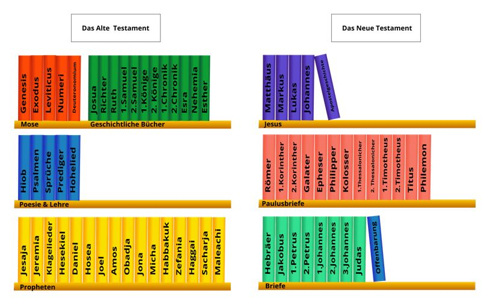

Was Ist die Bibel?
Ein Großes Buch?
Eines der ersten Dinge, die wir über die Bibel entdecken ist daß es kein einziges Buch ist, sondern eine Sammlung von 66 Büchern! Obwohl wir die Bücher nennen, die Bibel besteht eigentlich aus Geschichten, Gedichten und Liedern, Biographien und mehreren Briefen (dies war vor E-Mail, erinnern?).
Weil es so viele verschiedene Arten von Schreiben enthält, die Bibel wird in der Regel nicht von Deckung zu Deckung gelesen, wie die meisten modernen Bücher sind (obwohl es sicher sein kann). Anstatt, Gläubige kommen gewöhnlich zur Bibel, um bestimmte Passagen zu lesen, zum Beispiel die Geschichten über Jesus, oder die Lobgesänge, die Gott geschrieben hat.
Das Bild oben (und das größere am Anfang dieses Buches) zeigt, wie die Bücher der Bibel in Kategorien gruppiert sind. Um zu verstehen, warum die Bibel aus so vielen verschiedenen Büchern besteht, es hilft, ein wenig über die Geschichte der Bibel zu wissen und wie es geschrieben wurde. Gott begann Menschen zu inspirieren, seine Botschaften an die Menschheit vor etwa 3000 Jahren aufzuschreiben (die frühen Termine sind ein wenig unklar). Über einen Zeitraum von etwa 1600 Jahren, Mindestens vierzig verschiedene Schriftsteller aus verschiedenen Epochen der Geschichte und verschiedenen Orten auf der ganzen Welt haben aufgenommen, was Gott ihnen inspiriert zu sagen hatte. Und doch, trotz dieser vielfältigen Gruppe von Schriftstellern, die Bibel sagt im Grunde eine einzige Geschichte: die die Menschen zu Jesus führt, der die letzte Botschaft Gottes für die Welt war.

Die Bibel kann wie ein schreckliches GROßES Buch erscheinen. Einige Leute denken oder sie haben gehört, daß die Bibel mysteriös oder schwer zu verstehen ist. Sie haben sogar gesagt, daß nur Minister oder Priester die Bibel wirklich verstehen können.
Das ist warum es hilft zu wissen, was die Bibel WIRKLICH ist: Gottes Botschaft für ALLE Menschen überall, soll von gewöhnlichen Menschen gelesen werden (alle!).

Was Ist Ein Testament?
Das Wort "Testament" könnte uns einen Willen denken lassen (letzter Wille und Testament
): Ein juristisches Dokument, das die Wünsche einer Person über das, was mit ihrem Eigentum und Besitz passiert, wenn sie sterben. In der Bibel, lange bevor Jesus auf die Erde kam, Gott hat zuerst Seinen Willen zum Ausdruck gebracht, daß die Menschen ihn als ihren EINZIGEN Gott kennen und anbeten sollten; im Gegenzug Menschen ihre Sünden vergeben. Die erste Teilung der Bibel, das Alte Testament, ist die Geschichte wie die Menschheit auf den Willen Gottes reagierte.
Weil die Menschheit dem Willen Gottes NICHT gefolgt war, Gott hat einen neuen Weg eingeführt, damit sie vergeben werden können: indem Er Jesus, seinen einzigen Sohn, zur Erde schickte, um für ihre Sünden zu sterben. Die Geschichten von Jesus und diejenigen, die ihm folgen wollten, sind die Geschichten des Neuen Testament, oder Wille, Gottes für die Menschheit, die Er erschaffen hat. Und so wird die Bibel in das Alte Testament und das Neue Testament eingeteilt: Bücher, die geschrieben wurden, bevor Jesus in die Welt kam und die, die nachher geschrieben wurden.

Wie Finde Ich Eine Passage in die Bibel?
Das Lesen der Bibel zu erleichtern, es ist sehr hilfreich, sich mit den Namen der Bücher der Bibel vertraut zu machen. Obwohl es wie eine schwierige Aufgabe scheinen mag, es ist sehr hilfreich, alle Namen in Ordnung zu merken. Mache eine Herausforderung an sich selbst 10 Namen pro Tag zu merken. Wenn Sie beginnen, die nächsten 10 zu merken, achten Sie darauf, die vorherigen, die Sie zuerst auswendig zu sagen, so daß Sie in der Lage sind, sie alle in Ordnung zu rezitieren.
Eine Liste der Bücher der Bibel, in Altes Testament und Neues Testament unterteilt, erscheint auf der nächsten Seite. Verwenden Sie diese Anleitung zum Auswendiglernen.
Öffnen Sie die Bibel zu jeder Seite, und Sie werden sehen, viele kleine Absätze, jeder mit einer Zahl. Diese werden Verse genannt. Eine Sammlung von Versen wird ein Kapitel genannt (aber nicht alle Kapitel haben die gleiche Anzahl von Versen). Die einzigen Ausnahmen hiervon sind die Bücher von Obadja im Alten Testament und die Bücher von Philemon, 2 und 3 Johannes und Judas im Neuen Testament; sie sind nicht in Kapitel unterteilt.

Wenn man sich auf bestimmte Stellen in der Bibel bezieht, Sie benutzen daß, was man "Kapitel und Vers" nennt. Wenn Sie den sechzehnten Vers im dritten Kapitel des Buches von Johannes finden wollen, Sie Würden wahrscheinlich es auf diese Weise geschrieben sehen: Johannes 3:16.
Dies ist wann das Auswendiglernen der Namen der Bücher der Bibel nützlich ist: Sie Werden wissen, daß Johannes das vierte Buch im Neuen Testament ist. Nach dem Finden des Buches von Johannes, Sie Würden nach dem dritten Kapitel suchen und, endlich, den sechzehnten Vers. Alle Verweise auf Passagen in der Bibel sind wie oben mit Johannes 3:16 geschrieben. Wenn mehr als ein Vers erwähnt wird, würde es so geschrieben: Exodus 20:1-17. Das bedeutet, daß Sie die ersten siebzehn Verse des zwanzigsten Kapitels des Buches Exodus finden würden. Nicht schwer!
- 1 Mose - Genesis
- 2 Mose - Exodus
- 3 Mose - Levitikus
- 4 Mose - Numeri
- 5 Mose - Deuteronomium
- Josua
- Richtern
- Rut
- 1 Samuel
- 2 Samuel
- 1 Königen
- 2 Königen
- 1 Chronik
- 2 Chronik
- Esra
- Nehemia
- Ester
- Ijob (Hiob)
- Die Psalmen
- Sprichwörter
- Kohelet (Prediger)
- Das Hohelied
- Jesaja
- Jeremia
- Klagelieder
- Ezechiel
- Daniel
- Hosea
- Joel
- Amos
- Obadja
- Jona
- Michah
- Nahum
- Habakuk
- Zefanja
- Haggai
- Sacharja
- Maleachi
- Matthäus
- Markus
- Lukas
- Johannes
- Die Geschichte der Apostel
- Römer
- 1 Korinther
- 2 Korinther
- Galater
- Epheser
- Philipper
- Kolosser
- 1 Thessalonicher
- 2 Thessalonicher
- 1 Timotheus
- 2 Timotheus
- Titus
- Philemon
- Hebräer
- Jakobus
- 1 Petrus
- 2 Petrus
- 1 Johannes
- 2 Johannes
- 3 Johannes
- Judas
- Offenbarung